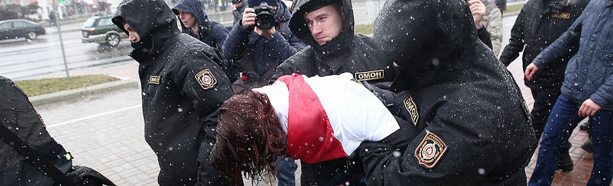
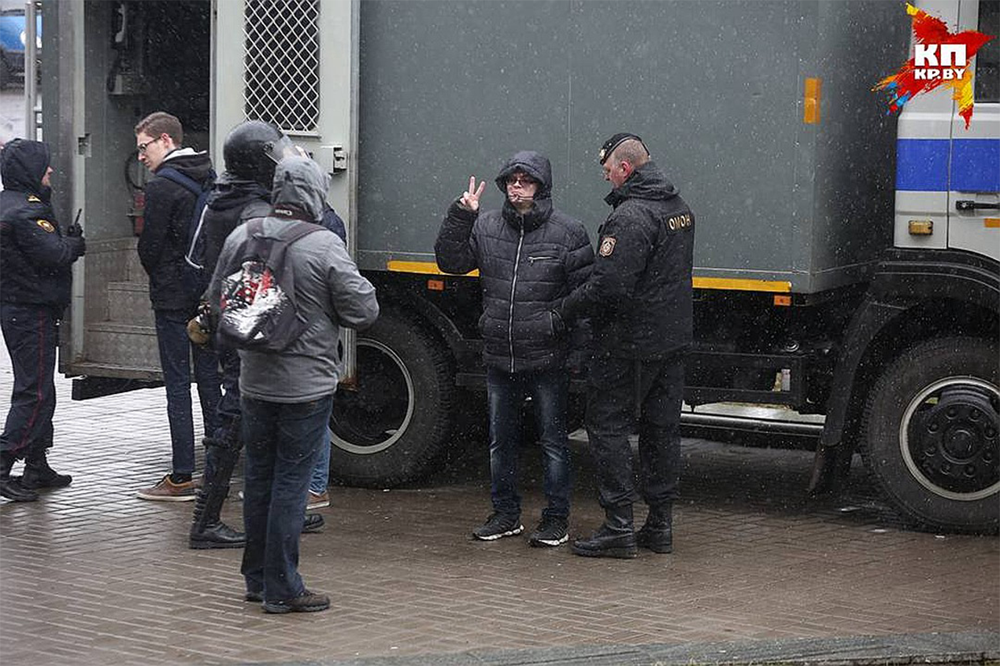

<section><div class="container"><div class="newsBig"><div class="newsBig__head"><div class="newsBig__mask"></div><div class="newsBig__title">25 кадров Дня Воли-2017 в Минске</div><div class="newsBig__date">7 Апреля 2018</div><div class="newsBig__autor">Автор: Анатолий Шумченко  Фото: Павел Мартинчик</div></div><div class="newsBig__text"><b>Традиционного шествия и митинга ко Дню Воли в Минске не вышло - столичные власти не дали разрешения на массовые мероприятия.</b>Тем не менее, люди все равно вышли на улицы, где их уже ждал ОМОН. Проспект Независимости на время полностью перекрыли. В итоге - сотни задержанных, в том числе журналисты и правозащитники.</div><div class="newsBig__text"> <p>  Традиционного шествия и митинга ко Дню Воли в Минске не вышло - столичные власти не дали разрешения на массовые мероприятия массовые мероприятия.</p><p> Тем не менее, люди все равно вышли на улицы, где их уже ждал ОМОН. Проспект Независимости на время полностью перекрыли. В итоге - сотни задержанных, в том числе журналисты и правозащитники. </p></div></div></div></section>